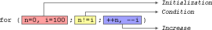

Statements and flow control
;), and are executed in the same order in which they appear in a program.But programs are not limited to a linear sequence of statements. During its process, a program may repeat segments of code, or take decisions and bifurcate. For that purpose, C++ provides flow control statements that serve to specify what has to be done by our program, when, and under which circumstances.
Many of the flow control statements explained in this section require a generic (sub)statement as part of its syntax. This statement may either be a simple C++ statement, -such as a single instruction, terminated with a semicolon (
;) - or a compound statement. A compound statement is a group of statements (each of them terminated by its own semicolon), but all grouped together in a block, enclosed in curly braces: {}:{ statement1; statement2; statement3; } The entire block is considered a single statement (composed itself of multiple substatements). Whenever a generic statement is part of the syntax of a flow control statement, this can either be a simple statement or a compound statement.
Selection statements: if and else
Theif keyword is used to execute a statement or block, if, and only if, a condition is fulfilled. Its syntax is:if (condition) statement Here,
condition is the expression that is being evaluated. If this condition is true, statement is executed. If it is false, statement is not executed (it is simply ignored), and the program continues right after the entire selection statement.For example, the following code fragment prints the message
(x is 100), only if the value stored in the x variable is indeed 100: |
|
If
x is not exactly 100, this statement is ignored, and nothing is printed.If you want to include more than a single statement to be executed when the condition is fulfilled, these statements shall be enclosed in braces (
{}), forming a block: |
|
As usual, indentation and line breaks in the code have no effect, so the above code is equivalent to:
|
|
Selection statements with
if can also specify what happens when the condition is not fulfilled, by using the else keyword to introduce an alternative statement. Its syntax is:
if (condition) statement1 else statement2
where
statement1 is executed in case condition is true, and in case it is not, statement2 is executed.For example:
|
|
This prints
x is 100, if indeed x has a value of 100, but if it does not, and only if it does not, it prints x is not 100 instead.Several if + else structures can be concatenated with the intention of checking a range of values. For example:
|
|
This prints whether x is positive, negative, or zero by concatenating two if-else structures. Again, it would have also been possible to execute more than a single statement per case by grouping them into blocks enclosed in braces:
{}.Iteration statements (loops)
Loops repeat a statement a certain number of times, or while a condition is fulfilled. They are introduced by the keywordswhile, do, and for.The while loop
The simplest kind of loop is the while-loop. Its syntax is:
while (expression) statement
The while-loop simply repeats
statement while expression is true. If, after any execution of statement, expression is no longer true, the loop ends, and the program continues right after the loop. For example, let's have a look at a countdown using a while-loop: |
|
10, 9, 8, 7, 6, 5, 4, 3, 2, 1, liftoff! |
The first statement in
main sets n to a value of 10. This is the first number in the countdown. Then the while-loop begins: if this value fulfills the condition n>0 (that n is greater than zero), then the block that follows the condition is executed, and repeated for as long as the condition (n>0) remains being true.The whole process of the previous program can be interpreted according to the following script (beginning in
main):nis assigned a value- The
whilecondition is checked (n>0). At this point there are two possibilities:
- condition is true: the statement is executed (to step 3)
- condition is false: ignore statement and continue after it (to step 5)
- condition is true: the statement is executed (to step 3)
- Execute statement:
cout << n << ", ";(prints the value of
--n;
nand decreasesnby 1)
- End of block. Return automatically to step 2.
- Continue the program right after the block:
printliftoff!and end the program.
A thing to consider with while-loops is that the loop should end at some point, and thus the statement shall alter values checked in the condition in some way, so as to force it to become false at some point. Otherwise, the loop will continue looping forever. In this case, the loop includes
--n, that decreases the value of the variable that is being evaluated in the condition (n) by one - this will eventually make the condition (n>0) false after a certain number of loop iterations. To be more specific, after 10 iterations, n becomes 0, making the condition no longer true, and ending the while-loop.Note that the complexity of this loop is trivial for a computer, and so the whole countdown is performed instantly, without any practical delay between elements of the count (if interested, see
sleep_for for a countdown example with delays).The do-while loop
A very similar loop is the do-while loop, whose syntax is:
do statement while (condition);
It behaves like a while-loop, except that
condition is evaluated after the execution of statement instead of before, guaranteeing at least one execution of statement, even if condition is never fulfilled. For example, the following example program echoes any text the user introduces until the user enters goodbye: |
|
Enter text: hello You entered: hello Enter text: who's there? You entered: who's there? Enter text: goodbye You entered: goodbye |
The do-while loop is usually preferred over a while-loop when the
statement needs to be executed at least once, such as when the condition that is checked to end of the loop is determined within the loop statement itself. In the previous example, the user input within the block is what will determine if the loop ends. And thus, even if the user wants to end the loop as soon as possible by entering goodbye, the block in the loop needs to be executed at least once to prompt for input, and the condition can, in fact, only be determined after it is executed.The for loop
Thefor loop is designed to iterate a number of times. Its syntax is:
for (initialization; condition; increase) statement;
Like the while-loop, this loop repeats
statement while condition is true. But, in addition, the for loop provides specific locations to contain an initialization and an increase expression, executed before the loop begins the first time, and after each iteration, respectively. Therefore, it is especially useful to use counter variables as condition.It works in the following way:
initializationis executed. Generally, this declares a counter variable, and sets it to some initial value. This is executed a single time, at the beginning of the loop.conditionis checked. If it is true, the loop continues; otherwise, the loop ends, andstatementis skipped, going directly to step 5.statementis executed. As usual, it can be either a single statement or a block enclosed in curly braces{ }.increaseis executed, and the loop gets back to step 2.- the loop ends: execution continues by the next statement after it.
Here is the countdown example using a for loop:
|
|
10, 9, 8, 7, 6, 5, 4, 3, 2, 1, liftoff! |
The three fields in a for-loop are optional. They can be left empty, but in all cases the semicolon signs between them are required. For example,
for (;n<10;) is a loop without initialization or increase (equivalent to a while-loop); and for (;n<10;++n) is a loop with increase, but no initialization (maybe because the variable was already initialized before the loop). A loop with no condition is equivalent to a loop with true as condition (i.e., an infinite loop).Because each of the fields is executed in a particular time in the life cycle of a loop, it may be useful to execute more than a single expression as any of initialization, condition, or statement. Unfortunately, these are not statements, but rather, simple expressions, and thus cannot be replaced by a block. As expressions, they can, however, make use of the comma operator (
,): This operator is an expression separator, and can separate multiple expressions where only one is generally expected. For example, using it, it would be possible for a for loop to handle two counter variables, initializing and increasing both: |
|
This loop will execute 50 times if neither
n or i are modified within the loop:
n starts with a value of 0, and i with 100, the condition is n!=i (i.e., that n is not equal to i). Because n is increased by one, and i decreased by one on each iteration, the loop's condition will become false after the 50th iteration, when both n and i are equal to 50.Range-based for loop
The for-loop has another syntax, which is used exclusively with ranges:
for ( declaration : range ) statement;
This kind of for loop iterates over all the elements in
range, where declaration declares some variable able to take the value of an element in this range. Ranges are sequences of elements, including arrays, containers, and any other type supporting the functions begin and end; Most of these types have not yet been introduced in this tutorial, but we are already acquainted with at least one kind of range: strings, which are sequences of characters.An example of range-based for loop using strings:
|
|
[H][e][l][l][o][!] |
Note how what precedes the colon (
:) in the for loop is the declaration of a char variable (the elements in a string are of type char). We then use this variable, c, in the statement block to represent the value of each of the elements in the range.This loop is automatic and does not require the explicit declaration of any counter variable.
Range based loops usually also make use of type deduction for the type of the elements with
auto. Typically, the range-based loop above can also be written as: |
|
Here, the type of
c is automatically deduced as the type of the elements in str.Jump statements
Jump statements allow altering the flow of a program by performing jumps to specific locations.The break statement
break leaves a loop, even if the condition for its end is not fulfilled. It can be used to end an infinite loop, or to force it to end before its natural end. For example, let's stop the countdown before its natural end: |
|
10, 9, 8, 7, 6, 5, 4, 3, countdown aborted! |
The continue statement
Thecontinue statement causes the program to skip the rest of the loop in the current iteration, as if the end of the statement block had been reached, causing it to jump to the start of the following iteration. For example, let's skip number 5 in our countdown: |
|
10, 9, 8, 7, 6, 4, 3, 2, 1, liftoff! |
The goto statement
goto allows to make an absolute jump to another point in the program. This unconditional jump ignores nesting levels, and does not cause any automatic stack unwinding. Therefore, it is a feature to use with care, and preferably within the same block of statements, especially in the presence of local variables.The destination point is identified by a label, which is then used as an argument for the
goto statement. A label is made of a valid identifier followed by a colon (:).goto is generally deemed a low-level feature, with no particular use cases in modern higher-level programming paradigms generally used with C++. But, just as an example, here is a version of our countdown loop using goto: |
|
10, 9, 8, 7, 6, 5, 4, 3, 2, 1, liftoff! |
Another selection statement: switch.
The syntax of the switch statement is a bit peculiar. Its purpose is to check for a value among a number of possible constant expressions. It is something similar to concatenatingif-else statements, but limited to constant expressions. Its most typical syntax is:switch (expression)
{
case constant1:
group-of-statements-1;
break;
case constant2:
group-of-statements-2;
break;
.
.
.
default:
default-group-of-statements
}It works in the following way:
switch evaluates expression and checks if it is equivalent to constant1; if it is, it executes group-of-statements-1 until it finds the break statement. When it finds this break statement, the program jumps to the end of the entire switch statement (the closing brace).If expression was not equal to
constant1, it is then checked against constant2. If it is equal to this, it executes group-of-statements-2 until a break is found, when it jumps to the end of the switch.Finally, if the value of expression did not match any of the previously specified constants (there may be any number of these), the program executes the statements included after the
default: label, if it exists (since it is optional).Both of the following code fragments have the same behavior, demonstrating the if-else equivalent of a switch statement:
| switch example | if-else equivalent |
|---|---|
|
|
The
switch statement has a somewhat peculiar syntax inherited from the early times of the first C compilers, because it uses labels instead of blocks. In the most typical use (shown above), this means that break statements are needed after each group of statements for a particular label. If break is not included, all statements following the case (including those under any other labels) are also executed, until the end of the switch block or a jump statement (such as break) is reached.If the example above lacked the break statement after the first group for case one, the program would not jump automatically to the end of the switch block after printing
x is 1, and would instead continue executing the statements in case two (thus printing also x is 2). It would then continue doing so until a break statement is encountered, or the end of the switch block. This makes unnecessary to enclose the statements for each case in braces {}, and can also be useful to execute the same group of statements for different possible values. For example: |
|
Notice that
switch is limited to compare its evaluated expression against labels that are constant expressions. It is not possible to use variables as labels or ranges, because they are not valid C++ constant expressions.To check for ranges or values that are not constant, it is better to use concatenations of
if and else if statements.Basic Input/Output | Index | Functions |